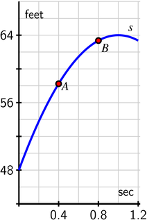
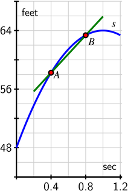
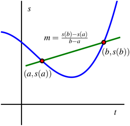
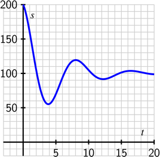
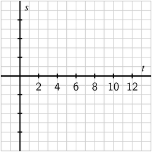

{In this section, we strive to understand the ideas generated by the following important questions:
How is the average velocity of a moving object connected to the values of its position function?
How do we interpret the average velocity of an object geometrically with regard to the graph of its position function?
How is the notion of instantaneous velocity connected to average velocity?
}
Subsection1.1.1Introduction
Calculus can be viewed broadly as the study of change. A natural and important question to ask about any changing quantity is “how fast is the quantity changing?” It turns out that in order to make the answer to this question precise, substantial mathematics is required.
We begin with a familiar problem: a ball being tossed straight up in the air from an initial height. From this elementary scenario, we will ask questions about how the ball is moving. These questions will lead us to begin investigating ideas that will be central throughout our study of differential calculus and that have wide-ranging consequences. In a great deal of our thinking about calculus, we will be well-served by remembering this first example and asking ourselves how the various (sometimes abstract) ideas we are considering are related to the simple act of tossing a ball straight up in the air.
Preview Activity
Suppose that the height \(s\) of a ball (in feet) at time \(t\) (in seconds) is given by the formula \(s(t) = 64 - 16(t-1)^2\).
Construct an accurate graph of \(y = s(t)\) on the time interval \(0 \le t \le 3\). Label at least six distinct points on the graph, including the three points that correspond to when the ball was released, when the ball reaches its highest point, and when the ball lands.
In everyday language, describe the behavior of the ball on the time interval \(0 \lt t \lt 1\) and on time interval \(1 \lt t \lt 3\). What occurs at the instant \(t = 1\)?
Consider the expression
\[
AV_{[0.5,1]} = \frac{s(1) - s(0.5)}{1-0.5}.
\]
Compute the value of \(AV_{[0.5,1]}\). What does this value measure geometrically? What does this value measure physically? In particular, what are the units on \(AV_{[0.5,1]}\)?
Subsection1.1.2Position and average velocity
Any moving object has a position\knownindex{\lt main>position\lt /main>} that can be considered a function of time. When this motion is along a straight line, the position is given by a single variable, and we usually let this position be denoted by \(s(t)\), which reflects the fact that position is a function of time. For example, we might view \(s(t)\) as telling the mile marker of a car traveling on a straight highway at time \(t\) in hours; similarly, the function \(s\) described in Preview Activity is a position function, where position is measured vertically relative to the ground.
Not only does such a moving object have a position associated with its motion, but on any time interval, the object has an average velocity\knownindex{\lt main>average velocity\lt /main>}. Think, for example, about driving from one location to another: the vehicle travels some number of miles over a certain time interval (measured in hours), from which we can compute the vehicle's average velocity. In this situation, average velocity is the number of miles traveled divided by the time elapsed, which of course is given in miles per hour. Similarly, the calculation of \(AV_{[0.5,1]}\) in Preview Activity found the average velocity of the ball on the time interval \([0.5,1]\), measured in feet per second.
In general, we make the following definition: for an object moving in a straight line whose position at time \(t\) is given by the function \(s(t)\), the average velocity\knownindex{\lt main>average velocity\lt /main>} of the object on the interval from \(t = a\) to \(t = b\), denoted \(AV_{[a,b]}\), is given by the formula
\[
AV_{[a,b]} = \frac{s(b)-s(a)}{b-a}.
\]
Note well: the units on \(AV_{[a,b]}\) are
“units of \(s\) per unit of \(t\),” such as “miles per hour” or “feet per second.”
The following questions concern the position function given by \(s(t) = 64 - 16(t-1)^2\), which is the same function considered in Preview Activity .
Compute the average velocity of the ball on each of the following time intervals: \([0.4,0.8]\), \([0.7,0.8]\), \([0.79, 0.8]\), \([0.799,0.8]\), \([0.8,1.2]\), \([0.8,0.9]\), \([0.8,0.81]\), \([0.8,0.801]\). Include units for each value.
On the provided graph in Figure 1.1.2, sketch the line that passes through the points \(A=(0.4, s(0.4))\) and \(B=(0.8, s(0.8))\). What is the meaning of the slope of this line? In light of this meaning, what is a geometric way to interpret each of the values computed in the preceding question?
Use a graphing utility to plot the graph of \(s(t) = 64 - 16(t-1)^2\) on an interval containing the value \(t = 0.8\). Then, zoom in repeatedly on the point \((0.8, s(0.8))\). What do you observe about how the graph appears as you view it more and more closely?
What do you conjecture is the velocity of the ball at the instant \(t = 0.8\)? Why?
Figure1.1.2A partial plot of \(s(t) = 64 - 16(t-1)^2\).
On \([0.4,0.8]\), the average velocity is \(AV_{[0.4,0.8]} = \frac{s(0.8)-s(0.4)}{0.8-0.4}\) ft/sec.
Remember that the slope of a line can be found by taking “rise over run.” In this context, the slope is found by computing “change in \(s\) over change in \(t\).”
While the curve \(s(t)\) is a parabola, how does it look up close on a very small interval?
“Instantaneous” velocity can be approximated by average velocity on a very small interval.
On \([0.4,0.8]\), the average velocity is \(AV_{[0.4,0.8]} = \frac{s(0.8)-s(0.4)}{0.8-0.4}\) ft/sec. Each of the other average velocities is computed similarly.
Remember that the slope of a line can be found by taking “rise over run.” In this context, the slope is found by computing “change in \(s\) over change in \(t\).” Note that each average velocity \(\frac{s(b)-s(a)}{b-a}\) can be viewed as the slope of a line between \((a,s(a))\) and \((b,s(b))\).
While the curve \(s(t)\) is a parabola, how does it look up close on a very small interval? What type of familiar function seems to emerge?
“Instantaneous” velocity can be approximated by average velocity on a very small interval. Are the numbers you computed in (a) getting close to a particular value as we look at smaller and smaller intervals surrounding \(t = 0.8\)?
On \([0.4,0.8]\), the average velocity is \(AV_{[0.4,0.8]} = \frac{s(0.8)-s(0.4)}{0.8-0.4} = \frac{63.36-58.24}{0.4} = 12.8\) ft/sec. On \([0.7,0.8]\), the average velocity is 8 ft/sec. The other average velocities are, respectively (in the order of the intervals listed in the activity), 6.56, 6.416, 0, 4.8, 6.24, 6.384, all measured in feet per second.
The slope of the line between \(A(0.4, s(0.4))\) and \(B(0.8, s(0.8))\) is \(\frac{s(0.8)-s(0.4)}{0.8-0.4} = 12.8\). This is precisely the average velocity of the ball between \(t = 0.4\) and \(t = 0.8\), and indeed each of the average velocities computed in (a) can be viewed as the slope of the line joining the points \((a,s(a))\) and \((b,s(b))\).

As we zoom in on the curve \(s(t) = 64 - 16(t-1)^2\) at the point \((0.5, 60)\), the graph begins to look like a straight line. Indeed, it appears to look like a straight line with slope about 6.4.
Observe that the average velocity of the ball on the intervals \([0.799,0.8]\) and \([0.8,0.801]\) is 6.416 and 6.384 feet/sec respectively. Hence it appears that the ball's velocity at the instant \(t = 0.8\) should be about 6.4 feet per second.
Whether driving a car, riding a bike, or throwing a ball, we have an intuitive sense that any moving object has a velocity at any given moment – a number that measures how fast the object is moving right now. For instance, a car's speedometer tells the driver what appears to be the car's velocity at any given instant. In fact, the posted velocity on a speedometer is really an average velocity that is computed over a very small time interval (by computing how many revolutions the tires have undergone to compute distance traveled), since velocity fundamentally comes from considering a change in position divided by a change in time. But if we let the time interval over which average velocity is computed become shorter and shorter, then we can progress from average velocity to instantaneous velocity.
Informally, we define the instantaneous velocity\knownindex{\lt main>instantaneous velocity\lt /main>} of a moving object at time \(t = a\) to be the value that the average velocity approaches as we take smaller and smaller intervals of time containing \(t = a\) to compute the average velocity. We will develop a more formal definition of this momentarily, one that will end up being the foundation of much of our work in first semester calculus. For now, it is fine to think of instantaneous velocity this way: take average velocities on smaller and smaller time intervals, and if those average velocities approach a single number, then that number will be the instantaneous velocity at that point.
Each of the following questions concern \(s(t) = 64 - 16(t-1)^2\), the position function from Preview Activity .
Compute the average velocity of the ball on the time interval \([1.5,2]\). What is different between this value and the average velocity on the interval \([0,0.5]\)?
Use appropriate computing technology to estimate the instantaneous velocity of the ball at \(t = 1.5\). Likewise, estimate the instantaneous velocity of the ball at \(t = 2\). Which value is greater?
How is the sign of the instantaneous velocity of the ball related to its behavior at a given point in time? That is, what does positive instantaneous velocity tell you the ball is doing? Negative instantaneous velocity?
Without doing any computations, what do you expect to be the instantaneous velocity of the ball at \(t = 1\)? Why?
Remember to use the formula for average velocity from above: \(AV_{[a,b]} = \frac{s(b)-s(a)}{b-a}\). Think carefully about whether certain quantities are positive or negative.
To estimate the instantaneous velocity at \(t = 1.5\), consider average velocities on the intervals \([1.499,1.5]\) and \([1.5,1.501]\).
Think about whether the ball is rising or falling.
What is the average velocity of the ball on small intervals that contain \(t = 0\)?
\(AV_{[1.5,2]} = \frac{s(2)-s(1.5)}{2-1.5}\). Your result should be negative since \(s(2) \lt s(1.5)\).
To estimate the instantaneous velocity at \(t = 1.5\), consider average velocities on the intervals \([1.499,1.5]\) and \([1.5,1.501]\).
You should find in (a) that the instantaneous velocity at \(t = 1.5\) is negative, while earlier we found that the instantaneous velocity at \(t = 0.5\) is positive. How are these signs connected to whether the ball is rising or falling?
Think about the line through the points \((0.999,s(0.999))\) and \((1,s(1))\) will look like given the “special” role of \((1,s(1))\) on the graph of \(s(t)\).
\(AV_{[1.5,2]} = \frac{s(2)-s(1.5)}{2-1.5} = -24\) ft/sec. We note that this average velocity is negative, and in fact is the opposite of the average velocity of 24 ft/sec on the interval \([0,0.5]\).
Since \(AV_{[1.499,1.5]} = -15.984\) and \(AV_{[1.5, 1.501]} = -16.016\), it appears that the instantaneous velocity of the ball at \(t = 1.5\) is approximately \(-16\) ft/sec. Similar computations show that at \(t = 2\), it appears the instantaneous velocity is about \(-32\) ft/sec. Note that \(-16>-32\), so the instantaneous velocity at \(t = 1.5\) is greater because it is “less negative.” Asking which number is “greater” is different from asking which number is “more negative.”
When the ball is rising, its instantaneous velocity is positive, while when the ball is falling, its instantaneous velocity is negative.
Note that \((1,s(1))\) is the vertex of the parabola given by \(s(t)\). At this point, the ball is neither rising nor falling. On intervals of the form \([a,1]\), where \(a \lt 1\), the average velocity of the ball is positive; on intervals of form \([1,b]\), where \(b > 1\), the average velocity is positive. Hence we expect the instantaneous velocity of the ball at the moment \(t = 1\) to be zero.
At this point we have started to see a close connection between average velocity and instantaneous velocity, as well as how each is connected not only to the physical behavior of the moving object but also to the geometric behavior of the graph of the position function. In order to make the link between average and instantaneous velocity more formal, we will introduce the notion of limit in Section 1.2. As a preview of that concept, we look at a way to consider the limiting value of average velocity through the introduction of a parameter. Note that if we desire to know the instantaneous velocity at \(t = a\) of a moving object with position function \(s\), we are interested in computing average velocities on the interval \([a,b]\) for smaller and smaller intervals. One way to visualize this is to think of the value \(b\) as being \(b = a + h\), where \(h\) is a small number that is allowed to vary. Thus, we observe that the average velocity of the object on the interval \([a,a+h]\) is
\[
AV_{[a,a+h]} = \frac{s(a+h)-s(a)}{h},
\]
with the denominator being simply \(h\) because \((a+h) - a = h\). Initially, it is fine to think of \(h\) being a small positive real number; but it is important to note that we allow \(h\) to be a small negative number, too, as this enables us to investigate the average velocity of the moving object on intervals prior to \(t = a\), as well as following \(t = a\). When \(h \lt 0\), \(AV_{[a,a+h]}\) measures the average velocity on the interval \([a+h,a]\).
To attempt to find the instantaneous velocity at \(t = a\), we investigate what happens as the value of \(h\) approaches zero. We consider this further in the following example.
For a falling ball whose position function is given by \(s(t) = 16 - 16t^2\) (where \(s\) is measured in feet and \(t\) in seconds), find an expression for the average velocity of the ball on a time interval of the form \([0.5, 0.5+h]\) where \(-0.5 \lt h \lt 0.5\) and \(h \ne 0\). Use this expression to compute the average velocity on \([0.5,0.75]\) and \([0.4,0.5]\), as well as to make a conjecture about the instantaneous velocity at \(t = 0.5\).
Solution.
We make the assumptions that \(-0.5 \lt h \lt 0.5\) and \(h \ne 0\) because \(h\) cannot be zero (otherwise there is no interval on which to compute average velocity) and because the function only makes sense on the time interval \(0 \le t \le 1\), as this is the duration of time during which the ball is falling. Observe that we want to compute and simplify
The most unusual part of this computation is finding \(s(0.5+h)\). To do so, we follow the rule that defines the function \(s\). In particular, since \(s(t) = 16-16t^2\), we see that
At this point, we note two things: first, the expression for average velocity clearly depends on \(h\), which it must, since as \(h\) changes the average velocity will change. Further, we note that since \(h\) can never equal zero, we may further simplify the most recent expression. Removing the common factor of \(h\) from the numerator and denominator, it follows that
\[
AV_{[0.5, 0.5+h]} = -16 - 16h.
\]
Now, for any small positive or negative value of \(h\), we can compute the average velocity. For instance, to obtain the average velocity on \([0.5,0.75]\), we let \(h = 0.25\), and the average velocity is \(-16 - 16(0.25) = -20\) ft/sec. To get the average velocity on \([0.4, 0.5]\), we let \(h = -0.1\), which tells us the average velocity is \(-16 - 16(-0.1) = -14.4\) ft/sec. Moreover, we can even explore what happens to \(AV_{[0.5, 0.5+h]}\) as \(h\) gets closer and closer to zero. As \(h\) approaches zero, \(-16h\) will also approach zero, and thus it appears that the instantaneous velocity of the ball at \(t = 0.5\) should be \(-16\) ft/sec.
For the function given by \(s(t) = 64 - 16(t-1)^2\) from Preview Activity , find the most simplified expression you can for the average velocity of the ball on the interval \([2, 2+h]\). Use your result to compute the average velocity on \([1.5,2]\) and to estimate the instantaneous velocity at \(t = 2\). Finally, compare your earlier work in Activity 1.1.1.
HintNote that \(s(2+h) = 64 - 16(2+h-1)^2 = 64 - 16(1+h)^2 = 64 - (16 + 32h + 16h^2) = 48 - 32h - 16h^2\).HintNote that \(s(2+h) = 64 - 16(2+h-1)^2 = 64 - 16(1+h)^2 = 64 - (16 + 32h + 16h^2) = 48 - 32h - 16h^2\), and then recall that \(AV_{[2, 2+h]} = \frac{s(2+h) - s(2)}{h}\). Finally, you can use a negative value for \(h\) to help you find the desired average velocity.Solution
Observe first that \(s(2+h) = 64 - 16(2+h-1)^2 = 64 - 16(1+h)^2 = 64 - (16 + 32h + 16h^2) = 48 - 32h - 16h^2\). Next, recall that \(AV_{[2, 2+h]} = \frac{s(2+h) - s(2)}{h}\), so
Now, since we assume \(h \ne 0\), we can simplify further to find that \(AV_{[2, 2+h]} = -32 - 16h\). Setting \(h = -0.5\), it follows \(AV_{[1.5,2]} = -32 + 16(0.5) = -24\) ft/sec, and letting \(h\) approach zero, we see that \(-32 - 16h\) will approach \(-32\), so the instantaneous velocity at \(t = 2\) appears to be \(-32\) feet/sec. Both results match our earlier work in Activity 1.1.1.
\item The average velocity on \([a,b]\) can be viewed geometrically as the slope of the line between the points \((a,s(a))\) and \((b,s(b))\) on the graph of \(y = s(t)\), as shown in Figure 1.1.6.
Figure1.1.6The graph of position function \(s\) together with the line through \((a,s(a))\) and \((b,s(b))\) whose slope is \(m = \frac{s(b)-s(a)}{b-a}\). The line's slope is the average rate of change of \(s\) on the interval \([a,b]\).
\item Given a moving object whose position at time \(t\) is given by a function \(s\), the average velocity of the object on the time interval \([a,b]\) is given by \(AV_{[a,b]} = \frac{s(b) - s(a)}{b-a}\). Viewing the interval \([a,b]\) as having the form \([a,a+h]\), we equivalently compute average velocity by the formula \(AV_{[a,a+h]} = \frac{s(a+h) - s(a)}{h}\).
\item The instantaneous velocity of a moving object at a fixed time is estimated by considering average velocities on shorter and shorter time intervals that contain the instant of interest.
\hrulefill
\begin{exercises}
\item A bungee jumper dives from a tower at time \(t=0\). Her height \(h\) (measured in feet) at time \(t\) (in seconds) is given by the graph in Figure 1.1.7.
Figure1.1.7A bungee jumper's height function.
In this problem, you may base your answers on estimates from the graph or use the fact that the jumper's height function is given by \(s(t) = 100\cos(0.75t) \cdot e^{-0.2t}+100\).
What is the change in vertical position of the bungee jumper between \(t=0\) and \(t=15\)?
Estimate the jumper's average velocity on each of the following time intervals: \([0,15]\), \([0,2]\), \([1,6]\), and \([8,10]\). Include units on your answers.
On what time interval(s) do you think the bungee jumper achieves her greatest average velocity? Why?
Estimate the jumper's instantaneous velocity at \(t=5\). Show your work and explain your reasoning, and include units on your answer.
Among the average and instantaneous velocities you computed in earlier questions, which are positive and which are negative? What does negative velocity indicate?
\item A diver leaps from a 3 meter springboard. His feet leave the board at time \(t=0\), he reaches his maximum height of 4.5 m at \(t = 1.1\) seconds, and enters the water at \(t = 2.45\). Once in the water, the diver coasts to the bottom of the pool (depth 3.5 m), touches bottom at \(t=7\), rests for one second, and then pushes off the bottom. From there he coasts to the surface, and takes his first breath at \(t=13\).
Let \(s(t)\) denote the function that gives the height of the diver's feet (in meters) above the water at time \(t\). (Note that the “height” of the bottom of the pool is \(-3.5\) meters.) Sketch a carefully labeled graph of \(s(t)\) on the provided axes in Figure 1.1.8. Include scale and units on the vertical axis. Be as detailed as possible.
 Figure1.1.8Axes for plotting \(s(t)\) in part (a) and \(v(t)\) in part (c) of the diver problem.
Based on your graph in (a), what is the average velocity of the diver between \(t = 2.45\) and \(t=7\)? Is his average velocity the same on every time interval within \([2.45,7]\)?
Let the function \(v(t)\) represent the instantaneous vertical velocity of the diver at time \(t\) (i.e. the speed at which the height function \(s(t)\) is changing; note that velocity in the upward direction is positive, while the velocity of a falling object is negative). Based on your understanding of the diver's behavior, as well as your graph of the position function, sketch a carefully labeled graph of \(v(t)\) on the axes provided in Figure 1.1.8. Include scale and units on the vertical axis. Write several sentences that explain how you constructed your graph, discussing when you expect \(v(t)\) to be zero, positive, negative, relatively large, and relatively small.
Is there a connection between the two graphs that you can describe? What can you say about the velocity graph when the height function is increasing? decreasing? Make as many observations as you can.
\item According to the U.S. census, the population of the city of Grand Rapids, MI, was 181,843 in 1980; 189,126 in 1990; and 197,800 in 2000.
Between 1980 and 2000, by how many people did the population of Grand Rapids grow?
In an average year between 1980 and 2000, by how many people did the population of Grand Rapids grow?
Just like we can find the average velocity of a moving body by computing change in position over change in time, we can compute the average rate of change of any function \(f\). In particular, the average rate of change of a function \(f\) over an interval \([a,b]\) is the quotient
\[
\frac{f(b)-f(a)}{b-a}.
\]
What does the quantity \(\frac{f(b)-f(a)}{b-a}\) measure on the graph of \(y = f(x)\) over the interval \([a,b]\)?
Let \(P(t)\) represent the population of Grand Rapids at time \(t\), where \(t\) is measured in years from January 1, 1980. What is the average rate of change of \(P\) on the interval \(t = 0\) to \(t = 20\)? What are the units on this quantity?
If we assume the population of Grand Rapids is growing at a rate of approximately 4% per decade, we can model the population function with the formula
\[
P(t) = 181843 (1.04)^{t/10}.
\]
Use this formula to compute the average rate of change of the population on the intervals \([5,10]\), \([5,9]\), \([5,8]\), \([5,7]\), and \([5,6]\).
How fast do you think the population of Grand Rapids was changing on January 1, 1985? Said differently, at what rate do you think people were being added to the population of Grand Rapids as of January 1, 1985? How many additional people should the city have expected in the following year? Why?